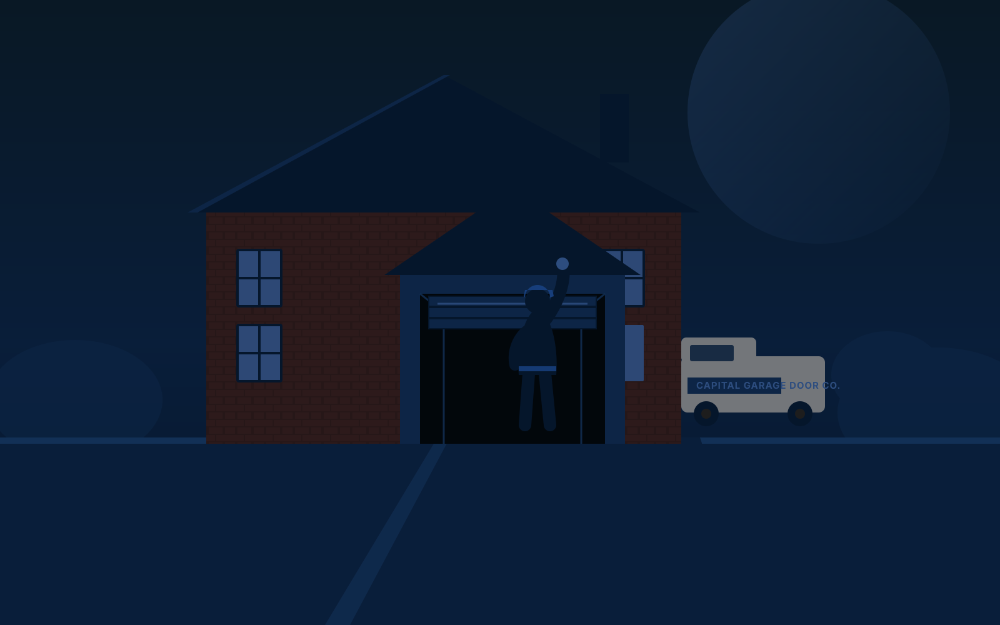
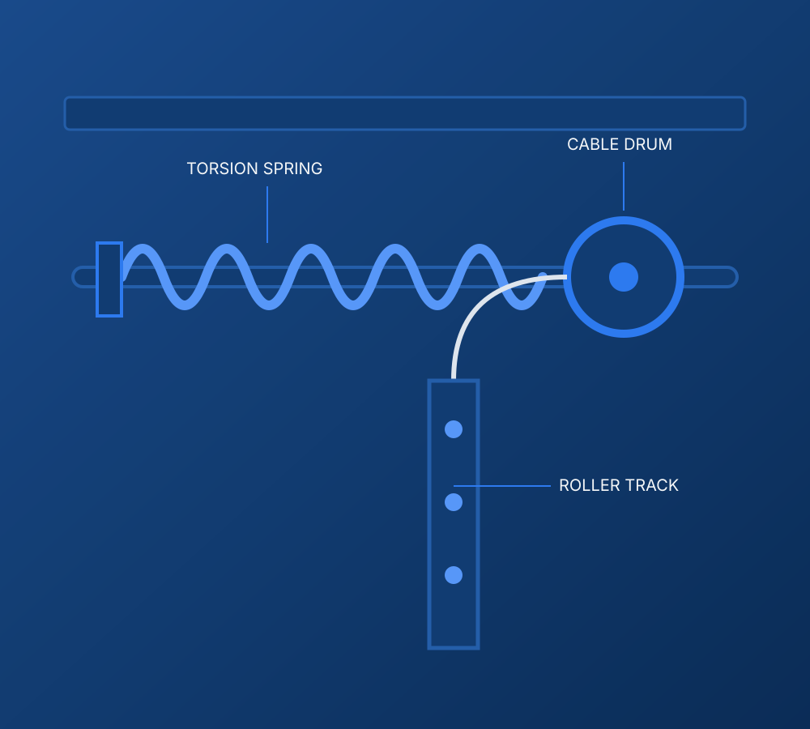

Problem-first visitsWe diagnose before we quote.

GARAGE DOOR REPAIR · MCLEAN, VA
Something's wrong with the door.
Something's wrong with the door.
Let's find out what — then fix it right.
Broken spring, sluggish opener, a door that won't sit straight — Capital Garage Door Co. diagnoses the actual cause before anyone touches a wrench, for homeowners across McLean and Northern Virginia.
Same-window schedulingMost single-issue repairs finish in one visit.
Explained, not upsoldYou see the cause before you approve the fix.
Northern Virginia focusedMcLean, Tysons, Vienna, Great Falls & beyond.
Full hardware coverageSprings, cables, tracks, openers.
Tested before we leaveSafety sensors checked every visit.
Clear next stepRequest service or call directly.
PROBLEM RECOGNITION
What's your garage door actually doing?
Most homeowners don't know the parts of a garage door — they know the symptom. Pick what you're seeing or hearing, and we'll show you the most likely cause before anyone comes out.
Likely area: torsion spring
Door won't open
If the opener strains, clicks, or does nothing at all, the torsion spring is the first place we look — it carries almost the full weight of the door, and a weak or broken spring is the most common reason an opener can't lift it. Worn rollers or a misaligned track can produce the same symptom.
HOW A GARAGE DOOR ACTUALLY WORKS
Nine parts. One system.
1
Torsion SpringWound above the door and holding most of its weight under tension — the source of nearly every dramatic garage door failure.
2
Cable DrumWinds the lift cable as the spring turns, translating spring tension into vertical lift.
3
Lift CableSteel cable running from the drum to the bottom bracket, carrying the door's full weight on every cycle.
4
TrackGuides the rollers through the vertical and curved sections as the door travels overhead.
5
RollersRide inside the track at each hinge point; dry or worn rollers are the usual source of new noise.
6
HingesConnect adjoining panels and let the door flex through the curved section of track.
7
PanelsThe visible sections of the door — damage to one doesn't always mean replacing the whole door.
8
Opener / Motor UnitCeiling-mounted unit driving the door through a rail and trolley — a separate system from the springs.
9
Photo-Eye SensorsAn invisible beam near the floor that stops the door from closing on an obstruction.
HUMAN DIAGNOSIS
You should understand the repair before you approve it.
A visit isn't just a fix — it's a chance to actually see what's happening. Before any hardware comes off, the technician walks the system with you: what's worn, what's failing, and what's still fine.
- 01Look & listenOperate the door, note where it hesitates, drags or sounds wrong.
- 02Inspect the hardwareSpring tension, cable condition, track alignment, opener behavior.
- 03Explain the causeShow you the actual worn or failed part, not just a symptom.
- 04Confirm before repairingYou know the cause and the plan before any work begins.
Torsion springs are wound under real tension — this step always uses matched winding bars, never a substitute tool.
WHAT A REPAIR VISIT LOOKS LIKE
Diagnose. Explain. Repair. Test. Confirm.
Diagnose
Operate the door, inspect springs, cables, track and opener to isolate the actual cause.
Explain
Show you the failed or worn part and what the repair involves before starting.
Repair
Replace or adjust the specific hardware — spring, cable, roller, track, opener component.
Test
Run the door through multiple full cycles, checking balance and force.
Confirm safety
Verify photo-eye sensors and auto-reverse before leaving the property.
COMPONENT DETAIL
The spring-and-cable system, up close.
Almost every dramatic garage door failure traces back to this assembly: a torsion spring under tension, a drum that winds the lift cable as the spring turns, and a track that keeps the whole motion controlled. Understanding it is most of what you need to understand your door.
Why it matters
The spring does the lifting — the opener motor only has to move a balanced door, not carry its weight. A failing spring shows up as a heavy door long before it shows up as a loud bang.

DECISION SUPPORT
Repair the door, or replace it?
There's no universal rule, but these are the questions that actually move the decision one way or the other.
The problem is isolated hardware.
- The issue is a spring, cable, roller, sensor or opener component.
- The door's panels and frame are structurally sound.
- This is the door's first or second real failure.
- The door's insulation, look and size still suit the home.
The failures keep stacking up.
- The door is well past a typical service life and failing repeatedly.
- Damage spans multiple panels, not one isolated section.
- Repair costs are approaching a meaningful share of replacement.
- You want better insulation, curb appeal, or a quieter opener.
WHAT THINGS TYPICALLY COST
General ranges, before you ever call.
These are typical market ranges for the region, not a quote for your door — the exact number depends on spring size, door weight and access. We'd rather you walk in informed than find out for the first time on an invoice.
RepairTypical rangeNotes
Torsion spring (each)$150–$350Springs are usually replaced in pairs on two-spring systems.
Extension spring (each)$100–$200Common on older or lighter doors.
Standard service call$75–$100Covers diagnosis; often applied toward the repair.
Same-day / emergency add-on+$50–$150For after-hours or urgent scheduling.
Opener repair or adjustment$100–$300Varies by whether parts or a full unit are needed.
General 2026 market ranges for the region based on independent published cost data, not a McLean-specific guarantee — see the source note in this project's audit.
WHY THIS ISN'T A DIY REPAIR
The spring is doing more work than it looks like.
!
Stored energy, not just weight
A wound torsion spring holds enough force to cause serious injury if it releases uncontrolled — this is the single biggest reason spring work isn't a weekend project.
◎
Specialized tools, on purpose
Winding bars and clamps exist specifically to control spring tension safely; household tools aren't a substitute.
✓
Sensors are tested, not assumed
Every visit ends with the photo-eye sensors and auto-reverse function verified — not just the original complaint.
WHAT HOMEOWNERS NOTICE
Representative feedback for this concept.
Capital Garage Door Co. is a fictional brand built for this portfolio — the feedback below illustrates the design and proof language, not real customer reviews.
★★★★★
"The technician showed me the actual broken spring before replacing it — first company that didn't just quote a number over the phone."
McLean, VATorsion spring repair
★★★★★
"Opener wasn't lifting the door and I assumed it needed replacing. Turned out to be the spring — cheaper fix, explained clearly."
Vienna, VAOpener diagnosis
★★★★★
"Door came off the track on a Sunday morning. Straightforward scheduling, and they checked the sensors before leaving."
Great Falls, VAOff-track repair
45–90 minTypical single-issue repair visit
2Photo-eye sensors tested every visit
1Visit for most spring, cable & opener repairs
7Northern Virginia communities served
Illustrative figures for this design concept, not verified operating statistics.
SERVICE AREA
Centered on McLean. Built for Northern Virginia.
No storefront to visit — the team works directly at homes across the McLean area and the surrounding Northern Virginia communities below.
- McLeanPrimary area
- Tysons~4 mi
- Vienna~5 mi
- Great Falls~7 mi
- Falls Church~6 mi
- Arlington~8 mi
- Reston~10 mi
- Oakton~7 mi
QUESTIONS HOMEOWNERS ASK
Straight answers, before you call.
How much does garage door spring repair cost in Northern Virginia?+
Homeowners in the region typically see $150–$350 per torsion spring installed, plus a service call in the $75–$100 range. Extension springs usually run a bit less than torsion springs. Emergency or same-day service can add $50–$150. Exact pricing depends on spring size, door weight and access.
Can I fix a garage door spring myself?+
It isn't recommended. A wound torsion spring stores enough force to cause serious injury if it releases uncontrolled, and the winding bars and clamps involved are specialized. This is one of the few home repairs worth leaving to a technician even for confident DIYers.
Why is my garage door making a loud bang or grinding noise?+
A sudden loud bang is the classic sign of a torsion spring breaking. Ongoing grinding or squeaking more often points to dry or worn rollers, loose hinges, or a track that has drifted out of alignment.
How long does a typical garage door repair take?+
Most single-issue repairs — a spring, a sensor, a roller, an opener adjustment — are completed in one visit, typically 45–90 minutes once the technician is on site. More involved work, like a full door replacement, is usually scheduled as its own appointment.
Should I repair or replace an aging garage door?+
Repair is usually the right call when the issue is isolated to hardware — springs, cables, an opener, a roller — and the door itself is structurally sound. Replacement becomes worth considering when the door is older than its expected service life, has recurring failures, or has damage spread across multiple panels.
What does a garage door safety sensor do?+
Photo-eye sensors sit a few inches off the floor on each side of the track and project an invisible beam across the opening. If something breaks that beam while the door is closing, the opener reverses the door instead of continuing down — it's a federally required safety feature on residential openers.
NEXT STEP
Tell us what the door is doing.
Describe the symptom and where you're located in Northern Virginia — that's enough to get scheduling started. Prefer to talk it through first? Call directly.
Call (571) 555-0142 →